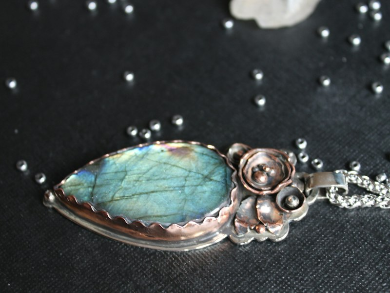
Águas de Oxum
Inspirada nas águas doces, na beleza, na prosperidade e na delicadeza. Conchas, formas fluidas e tons de azul que lembram o movimento de um rio.
Joalheria artesanal contemporânea
Arte, ancestralidade e identidade transformadas em peças únicas.
Conheça a coleção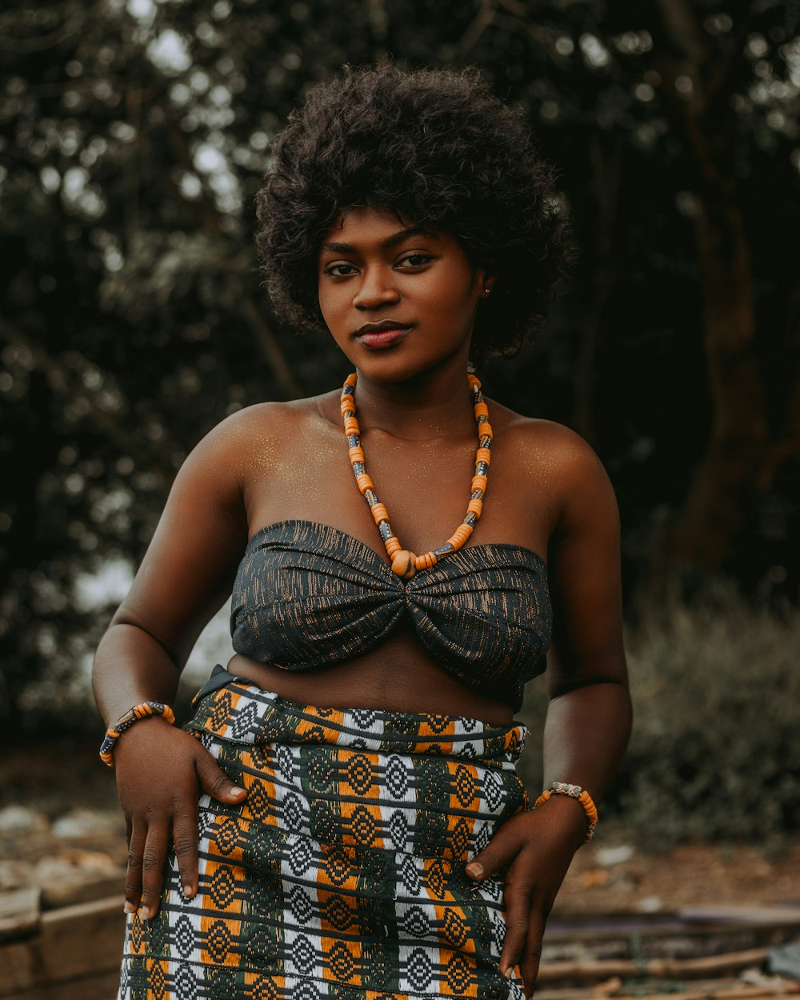
Sobre
Joias Ancestrais nasceu de uma mesa de cozinha cheia de contas, de fotografias antigas e de conversas que atravessaram gerações. Foi escutando essas vozes, e também o rio, a mata e o barro, que aprendemos a desenhar cada peça. Toda joia começa com uma pergunta: que história ela vai guardar?
Não trabalhamos com pressa nem com produção em série. Cada peça é feita à mão, em pequenos lotes, no tempo que o ofício pede. É uma joia para usar todos os dias e para lembrar, sem precisar dizer, de onde a gente vem.
“Joia ancestral não é enfeite. É memória que se escolhe para seguir no corpo.”
Coleções
Cada coleção nasce de um orixá, de um elemento da natureza e de uma forma de sentir o mundo.

Inspirada nas águas doces, na beleza, na prosperidade e na delicadeza. Conchas, formas fluidas e tons de azul que lembram o movimento de um rio.
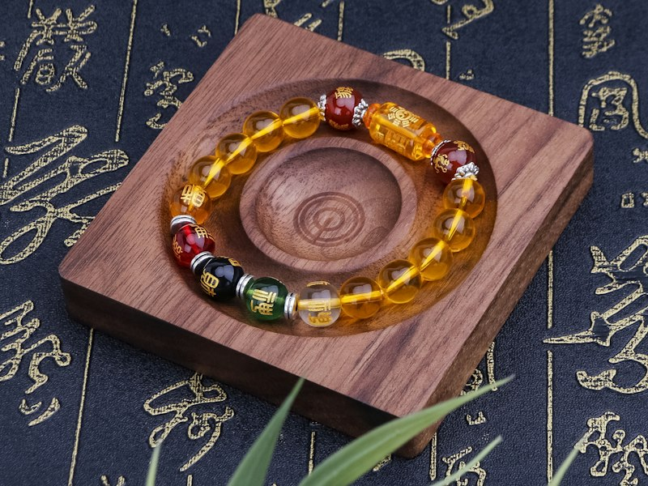
Inspirada nos caminhos, na força, no trabalho e na transformação. Metais, linhas firmes e texturas que evocam a estrada e a determinação.
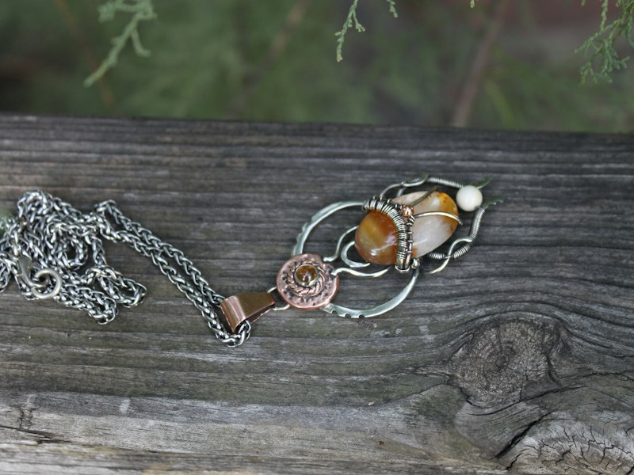
Inspirada na floresta, no conhecimento, na natureza e na abundância. Sementes, madeira e verdes que celebram a mata e a fartura.
Processo criativo
Nenhuma joia nasce de repente. Ela passa por quatro etapas, com escuta e cuidado em cada uma.
Mergulhamos em referências: memórias familiares, história, natureza e saberes tradicionais. É aqui que a história da peça começa a tomar forma.
Desenhamos cada joia à mão, em croquis e modelos, sempre com uma pergunta: o que esta peça quer contar?
A peça ganha corpo com técnicas artesanais — modelagem, textura e acabamento feitos manualmente, peça a peça.
Revisão, polimento e embalagem com cuidado. Cada peça sai pronta para contar a sua história.
Impacto
O impacto da Joias Ancestrais se mede em valores, não em números: são princípios que guiam cada decisão da marca.
O trabalho manual é tratado como arte: respeitado, pago com justiça e mostrado com orgulho.
Cada peça afirma a beleza e a força das culturas afro-brasileiras no presente.
As técnicas tradicionais são mantidas vivas e repassadas às novas gerações.
Artesãos e artesãs ganham protagonismo e fonte de sustento por meio do seu ofício.
Quem cria é dono da própria história e da própria criação, do início ao fim.
Galeria
Um olhar sobre as formas, os materiais e os detalhes que fazem de cada peça uma peça única.
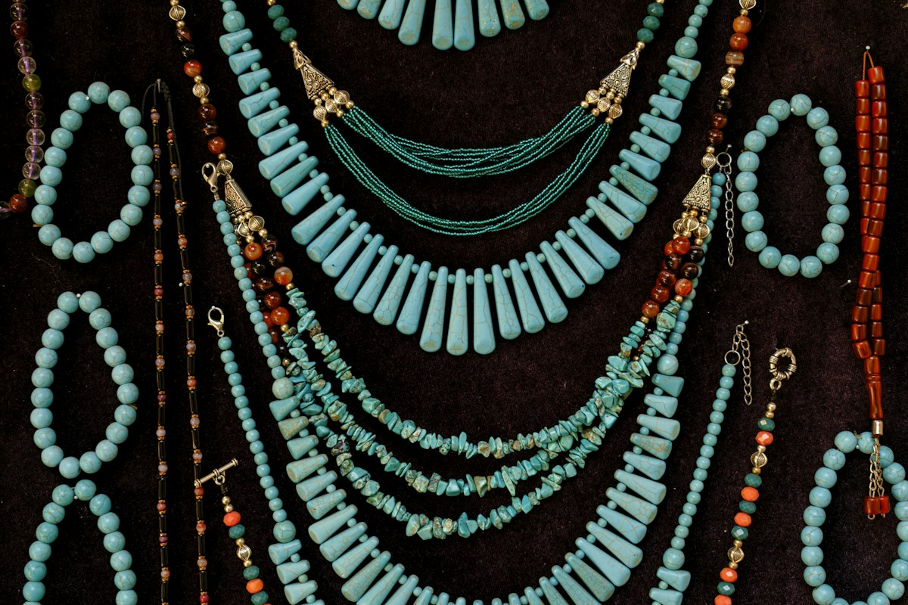
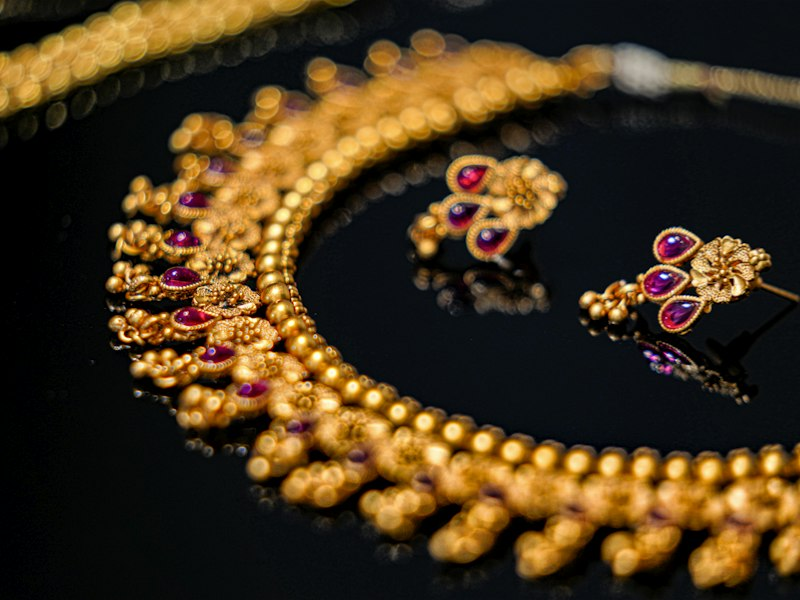
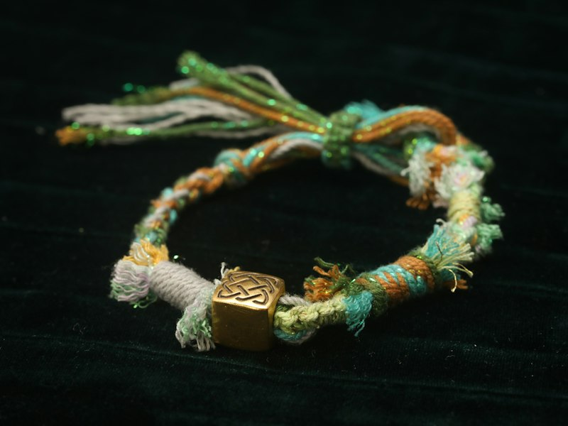
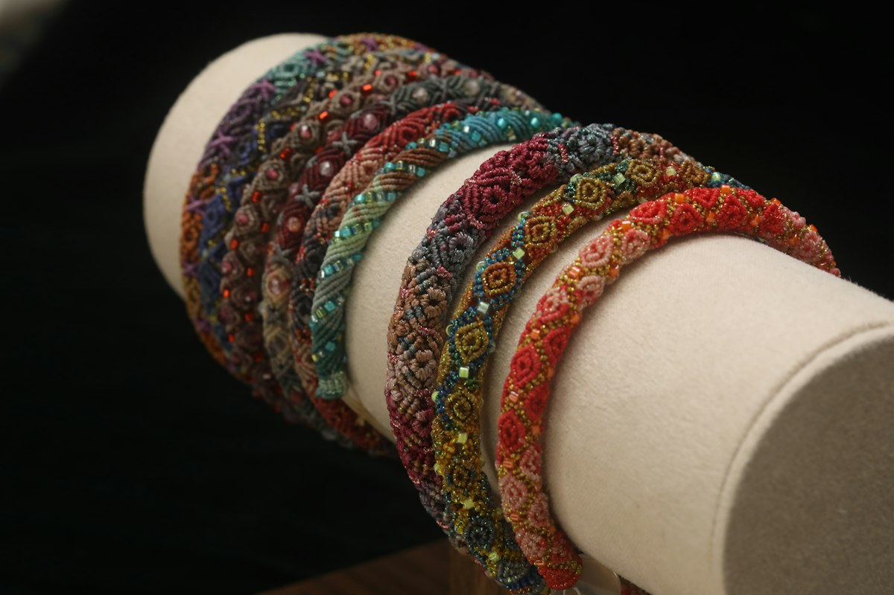
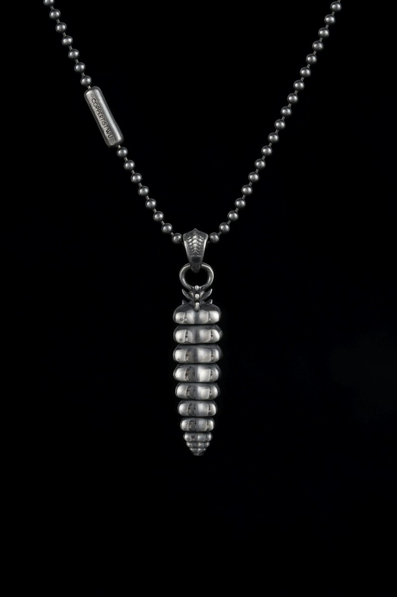
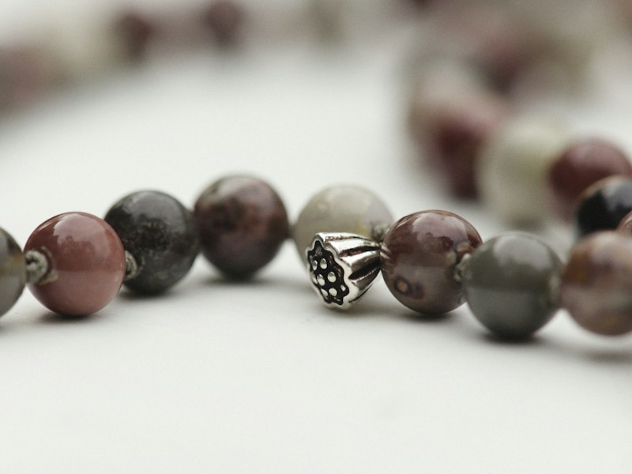
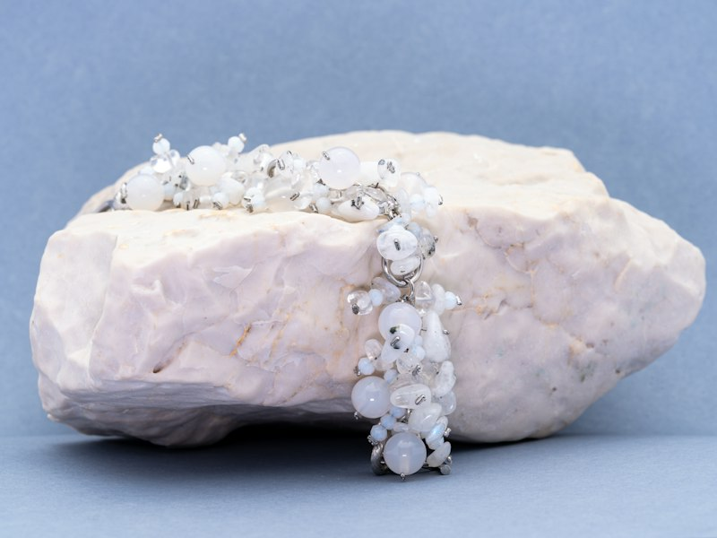
Contato
Quer conhecer as peças de perto, encomendar uma história ou saber mais sobre o projeto? Fale com a gente.